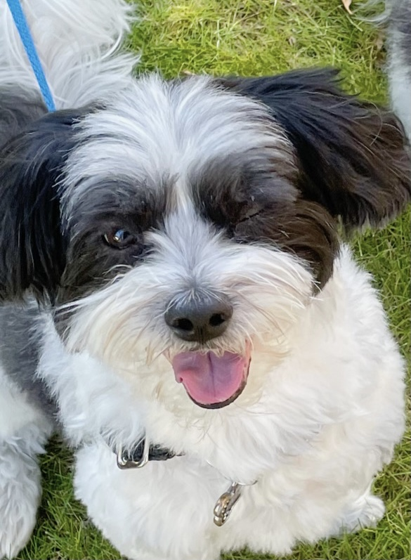

Milo, left, and Henry, right, taking a break from running around during their playdate.
Henry, being the little
spaz
that he is,
instigating
encouraging Milo to play.

 Milo, left, and Henry, right, taking a break from running around during their playdate.
Milo, left, and Henry, right, taking a break from running around during their playdate.